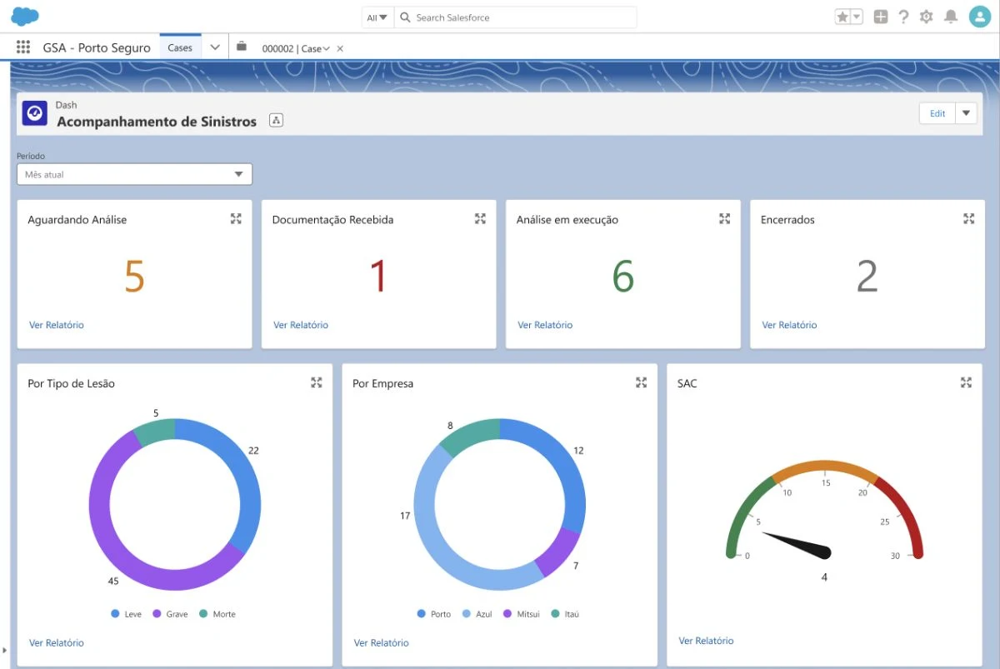
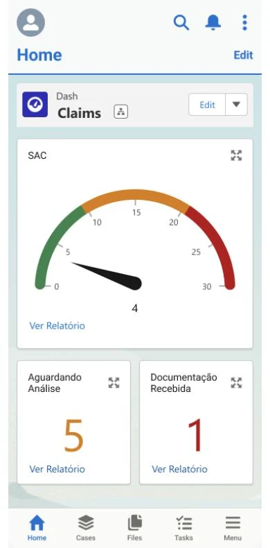
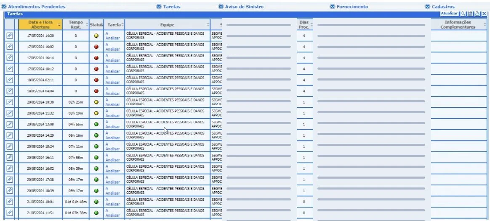
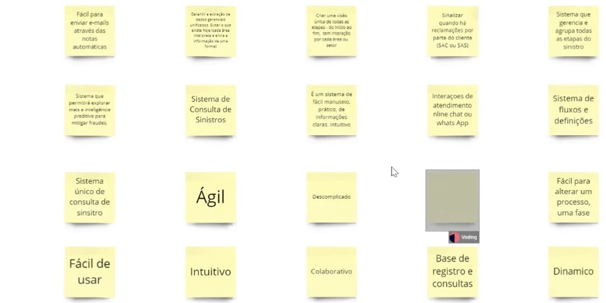
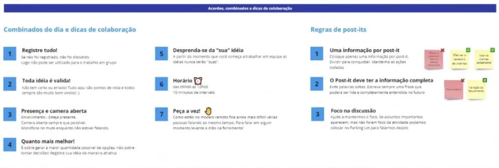
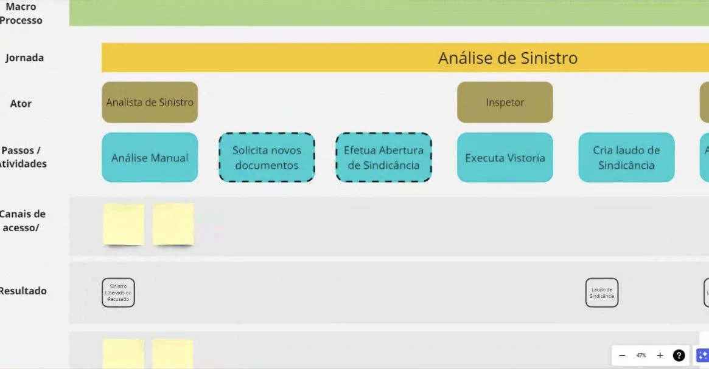
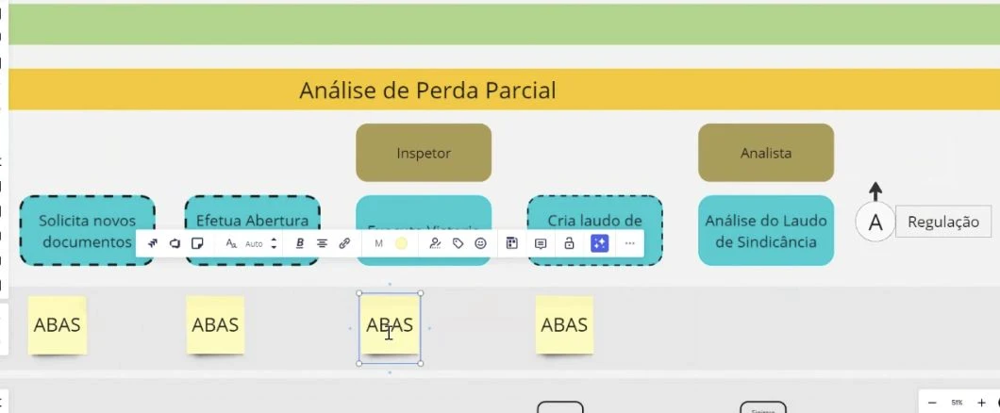

The business challenge
Build a common, scalable experience without carrying the fragmentation of the legacy workflow into the new platform. The migration created an opportunity to revisit how information and decisions were connected.
Redesigning the claims experience at Porto Seguro: connecting fragmented information, guiding decisions and bringing the workflow to desktop and mobile.


Business context & problem
Porto Seguro was moving from a 40-year-old claims environment to Salesforce Financial Services Cloud, with a shared foundation for Porto, Azul, Itaú and Mitsui.
Build a common, scalable experience without carrying the fragmentation of the legacy workflow into the new platform. The migration created an opportunity to revisit how information and decisions were connected.
Understanding a claim meant moving between notices, policies, documents, history and external tools. Analysts had to reconnect the information before deciding what to do next.
The detailed design shown here focuses on APP/DC: passenger personal accident and bodily injury claims, including internal handling and external regulation through REIS.
Claim, policy, documents and history in separate places.
Data copied into notes, local text files and payment flows.
Analysts checked whether a task belonged to Porto or REIS.
Document status and case progress required additional checks.

My contribution
As Senior Product Designer working through GFT, I connected discovery, journey mapping, content, interface design and handoff for the new claims workflow.
Translate observations into journey maps, priorities, content and Salesforce interface proposals.
Work with analysts, managers, technology and product teams to understand the operation and align priorities.
Connect recurring pain points to a clearer structure for queues, case context and guided analysis.
Work with Lightning components, the Financial Services Cloud data model and OmniScript. Support a shared foundation across Porto, Azul, Itaú and Mitsui without multiplying custom interfaces.
Tools: Figma, Miro, Salesforce component libraries, Kraft and AI-assisted synthesis.
Design direction
The direction was to combine operational visibility with a guided path through the claim, reducing the need to reconstruct context across separate tools.
The key design question: how could the experience help an analyst understand the case and move forward with the relevant information at hand?
Bring the relevant context together.
Make the sequence and next action explicit.
Use language and states people can act on.
A shared Salesforce foundation needed to serve four brands. I worked within Lightning and Financial Services Cloud patterns, focusing the proposal on information structure, sequence and clarity.
Approach & rationale
Observation, synthesis, content and prototyping connected the operational problem to the proposed interface. Each step below makes the reasoning visible.
Discovery & synthesis
I combined observation of the legacy workflow with collaborative workshops to understand the people, handoffs and decisions behind a claim.
days of intensive discovery
pain points synthesized
brands in a shared platform
Research scope as recorded in the project case. These figures describe the work, not post-launch performance.
The project record describes workshops with 100+ collaborators and an organizational context of around 13,000 employees. The screens shown here focus on the APP/DC workflow.


Shadowing exposed the switches between systems and the manual checks behind each decision. AI supported grouping the mapped pain points, while workshops with analysts, managers, technology and product teams helped align the problem space and MVP priorities.

The broader journey informed the work. The detailed screens in this case focus on APP/DC, including internal handling and external regulation through REIS.

Content design
Content design focused on clearer terms, actionable messages and consistent labels. Cloze testing was used to explore whether analysts understood the wording in context.
Prototyping & constraints
Wireframes and high-fidelity screens used Salesforce libraries to keep the proposal close to Lightning patterns. Prototyping and handoff connected the interface to the platform and its data requirements.
Each response addresses an observed problem in the workflow.
The legacy task list exposed work to do, but understanding the claim still required additional checks. The proposal connects the overview to policy, documents and history so those checks have a common context.
OmniScript and Lightning patterns gave the workflow a feasible structure. The design focuses on sequence, states and content while keeping the platform’s shared foundation.
Validation approach
Workshops aligned the problem and priorities; cloze testing explored language comprehension. The prototype and handoff made the proposal concrete for discussion.
Can the analyst understand the case without rebuilding it across tools?
Is it clear what needs attention and which step comes next?
Do terms and messages make sense at the moment of the decision?
The validation focus connects language comprehension, case context and navigation to the decisions analysts need to make.
The solution
Compare two entry points: the legacy task list and the proposed Salesforce overview. Move the divider to reveal each interface.
Drag, tap or use the arrow keys. Original project artifacts are shown in Portuguese; identifying information has been removed.
The proposed experience combines an operational overview with a structured path through the claim.
Queue status, received documentation, active analysis and closed cases in one overview.
A step-based flow supported by OmniScript and dynamic forms, aligned with the case context.
Claim notice, policy, related events, documents, history and comments connected to the case.
Requests, attachments and in-context viewing, alongside internal/external regulation and payment states.
Mobile handoff
The mobile proposal extends claim monitoring and consultation beyond the desktop, keeping familiar Salesforce navigation.
A compact dashboard for the workload and incoming documentation.
Search, company and priority to help locate the next case.
Stage, policy, related notices, files, comments and recent activity.
Mobile scope shown in the handoff: monitoring and case consultation.
Outcomes & reflections
The design work connects research findings to a common Salesforce experience, with operational visibility, guided analysis and mobile continuity.
Working figure from the project record.
Working figure from the project record.
Provisional impact figures. Baselines and measurement details are being reviewed; these should not be read as independently verified production results.
A documented journey, a synthesis of recurring pain points, shared design principles and a Salesforce proposal spanning dashboard, queues, analysis, documents, regulation and payments.
Analysis time, navigation effort, incomplete-document rework, SLA by stage and the clarity of communication with customers and brokers.
Treat the workflow as a service, not a collection of screens. Use platform constraints to focus the design. Bring engineering into discovery early, test language in context and document the reasoning behind each decision.
The research and design artifacts document the proposed experience. Confirming operational impact requires a consistent baseline, an agreed measurement period and evidence from the implemented workflow.
Explore the design reference or get in touch to talk about a product challenge.
Case artifacts reflect the design proposal and research record. Prototype charts are illustrative, not operational reporting.